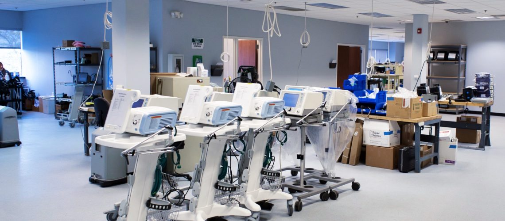
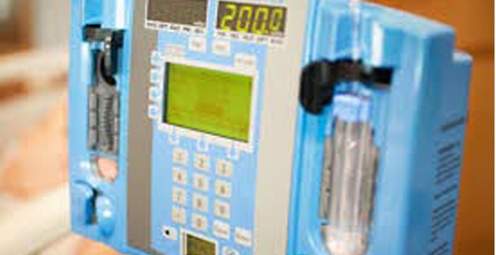

FACULTY MEMBERS

Name : HOD Name
Head of the Department
| At the starting of the college we have Medical Electronics branch and from 2015 onwards branch renamed as Biomedical Engg. With modification in syllabus. In this diploma course students will get a strong base in electronics. They have to study Basic Electronics, Electrical Engg., Electronic circuits, Linear integrated circuits, Digital Electronics, Communication Engg.etc.After that syllabus includes varios imaging technologies,Therapeutic equipments, diagnostic equips, analytical equipments and basics of hardware and networking. Candidates completed this course can work as biomedical engineers /service technicians in hospitals or biomedical equipment agencies. Many of the Biomedical alumni are working in organizations manufacturing of biomedical equipments.Like all other diploma courses, short term and long term courses are available for biomedical diploma holders. Biomedical engineering focuses on the advances that improve human health and health care at all levels. | ||
|  |  | |
| Objectives: | |
| * | Biomedical engineering is a branch of engineering that applies principles of science, engineering design and material science to medicine and biology for healthcare purposes. |
| * | This stream of engineering is largely responsible for the design of sophisticated medical equipments such as diagnostic and therapeutic machines and lifesaving devices. |
| * | The course teaches the candidates the fundamental principles of operation and format of analytical and diagnostic equipments. |
| * | The main motive of the course is to train the students in research technologies that would bring out new medical cures and improve healthcare standards. |
| * | Students after the completion of diploma in biomedical engineering are well-versed in the different dimensions involved in the field. They are hired as design engineer, marketing professional ,biomedical engineer, research engineer, quality control engineer and much more in government and private firms. |
|
FACULTY MEMBERS |
||
|
Name : HOD Name Head of the Department |
||

Name : Bio Medcal Engg. Name Lr. in Bio Medical Engineering |
Name : Bio Medcal Engg. Name Lr. in Bio Medical Engineering |
Name : Bio Medcal Engg. Name Lr. in Bio Medical Engineering |

Name : Demonstrator Name Lr. in Bio Medical Engineering |
Name : Demonstrator Name Lr. in Bio Medical Engineering |
Name : Demonstrator Name Lr. in Bio Medical Engineering |